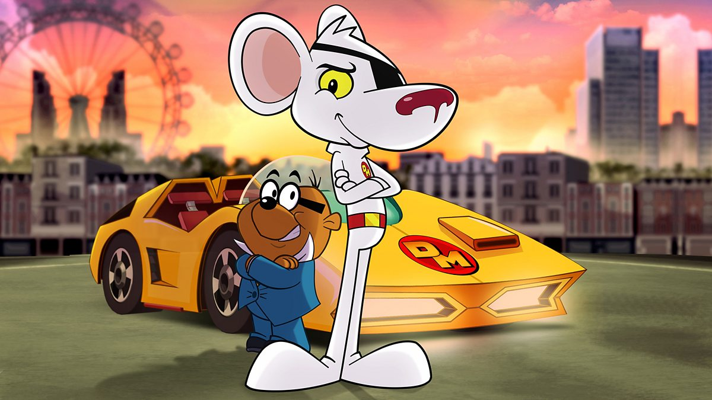

About Dangermouse
Danger Mouse is a British animated television series protagonist, depicted as a secret agent mouse with a penchant for thwarting villains and embarking on espionage adventures.
Dangernouse and Penfold
Dangermouse's Characteristics
- He's intelligent
- He's brave
- He's resourceful
Dangermouse's Friends
Danger Mouse is often accompanied by his loyal but bumbling assistant, Penfold, a timid hamster. He also occasionally allies with other characters, such as the inventor Professor Squawkencluck, in his adventures against villains. Click on the links below to read more about Dangermouse's friends: